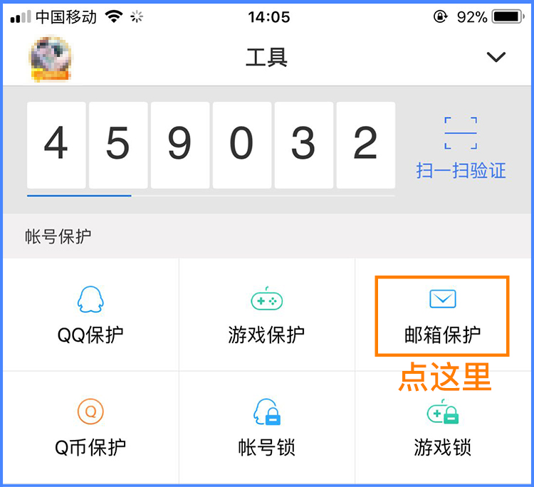

| 1．电子账单是记录用户每月信用卡消费、欠款和账单金额等信息的邮件通知，由银行发出。 2．账单邮箱是用来接收信用卡电子账单的邮箱地址，银行会在信用卡申请时登记。 3．如果没有登记或忘记账单邮箱，可在对应网上银行或手机App中进行登记或查看，也可联系银行客服进行免费补寄登记或查询。 |
什么是信用卡电子账单,账单邮箱？
为什么要导入账单邮箱？
| 导入账单邮箱，即可一键导入多个银行的账单信息，方便批量管理信用卡。采用RSA金融级别加密算法，保证您的数据安全！ |
管家支持的邮箱有哪些？
| QQ邮箱、163邮箱、126邮箱、yeah.net邮箱、网易VIP邮箱、189邮箱、联通邮箱、139邮箱、新浪邮箱、Gmail邮箱、阿里云邮箱、及其他开通pop3协议的邮箱，其他邮箱可联系银行客服或登录银行官网，查询或更改账单发送的邮箱。 |
支持邮箱账单导入的银行有哪些？
支持邮箱登录导入信用卡账单的有16家银行：
|
如何添加信用卡账单？
| 1. 信用卡管家首页【账单】页面点击右上角“+”或者最下方【添加账单】。 2. 进入【导入信用卡账单】页面，可以选择邮箱导入、手动添加信用卡等不同方式导入账单。 |
附属卡的账单如何导入？
| 用户只需确认银行账单是发到哪个邮箱的，使用对应的邮箱导入即可。 |
导入邮箱账单能做什么？
| 帮助用户统计信用卡账单日、还款日、账单金额、剩余额度、积分等信息，并及时提醒用户还款以及帮助用户做用卡规划。 |
为什么招商银行电子账单读取不出来？
可联系银行客服设置详细版账单,或者通过招商银行手机App，点击“我的”->“信用卡”->“账户管理”->“账单寄送方式”->“电子账单（含明细）”->确认即可。 简版账单 详细版账单  |
邮箱导入账单后没有新账单数据？
| 1．请先登录该邮箱，查看邮箱内是否有银行发送的电子账单 2．若邮箱已有账单，请确认是否为补发账单或简版账单： ① 补发账单：正常日期账单出账后导入；手输导入 ② 简版格式账单：改为详情版账单；联系银行客服设置； 3．邮箱账单被删除也会无法获取新的账单数据： 4．若上述方式无效，可能是银行发送的邮箱账单格式改版、无法解析： ① 我们会尽快优化该银行邮箱账单的解析技术(一般在5个工作日内修复) ② 技术修复期间，请使用“手动添加信用卡”方式查询账单或还款 ③ 在反馈界面里进行反馈，以便加快处理速度 |
怎样删除不想看到的信用卡?
| 进入信用卡管家首页，点击需要删除的卡片进入，点击右上角删除按钮，删除卡片后在管家首页不再显示，自动获取本邮箱账单的时候不再显示本卡片。 |
删除的信用卡如何恢复？
| 参照“如何添加信用卡账单？”从新添加账单邮箱导入即可。 |
同一银行多张卡如何显示？
| 系统根据银行卡账单数据解析，会根据用户所持有的信用卡，应进行统一还款或分开还款，来合并或拆分显示信用卡数据。 |
导入成功后，账单数据有误怎么办？
| 如遇到导入失败、流水缺失、余额不准等情况，请在反馈页描述遇到的问题．我们将安排专业的技术人员尽快处理。 |
资金规划功能介绍
| 资金规划可以直观的展现一段时间内各信用卡账单日、还款日的分布情况，方便用户简单快速的进行用卡规划。 |
今日推荐用卡功能介绍
| 通过智能分析每日提供最优用卡推荐，随用随看，最大化资金利用率。 |
信用卡的排序规则
| 信用卡按照账单日的先后进行排序。 |
卡管家是如何提醒还款的，可以关闭么？
| 卡管家提供还款提醒、账单日提醒、出账单提醒、逾期提醒等服务，在“我的”->“卡管家设置”，用户可开启/关闭各类提醒，还可以修改时间和次数。 |
为什么还款后仍提示逾期？
| 卡管家无法获取用户通过其他渠道还款的信息，如果用户在还款日前已经标记还款，本期账单不会发送逾期提醒。 |
免息期是怎么计算的？
| 免息期天数是指当日消费资金距离最后还款日的天数，（临近账单日消费的资金需要在当期账单还款，账单日过后消费的资金，需要在下期账单还款）。 |
网易邮箱如何开启POP3服务？
首先登陆邮箱，然后打开“设置->POP3/SMTP/IMAP” 。  进入客户端授权密码，点击开启。 选择“开启POP3服务”获取手机验证码。 进入客户端授权密码，点击开启。 选择“开启POP3服务”获取手机验证码。  自行设置客户端授权码，下次登录时，使用客户端授权码登录即可。 自行设置客户端授权码，下次登录时，使用客户端授权码登录即可。  |
QQ邮箱如何开启POP3服务？
首先登陆QQ邮箱，然后在点击设置。  选择POP3并开启。 选择POP3并开启。  进入验证界面选择验证方式。 进入验证界面选择验证方式。  牢记密码，登录时使用。 牢记密码，登录时使用。  除以上邮箱外，其他邮箱均默认开通POP3服务，如果之前关闭，请去设置里面手动开通。 除以上邮箱外，其他邮箱均默认开通POP3服务，如果之前关闭，请去设置里面手动开通。 |
开启了QQ安全中心
| 开始QQ安全中心会导致邮箱客户端无法登陆，请临时关闭QQ安全中心，登陆完毕后可以再次打开。  |
关闭网易二次登陆验证
| 开始QQ安全中心会导致邮箱客户端无法登陆，请临时关闭QQ安全中心，登陆完毕后可以再次打开。 |